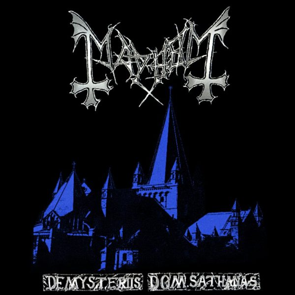
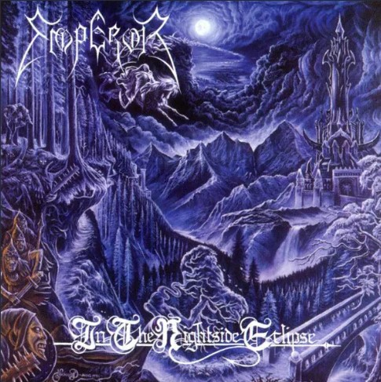
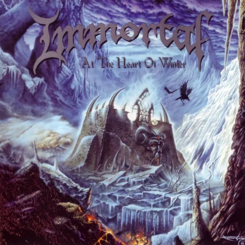
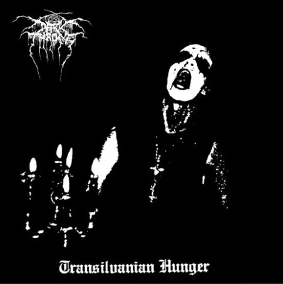
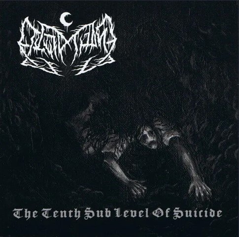
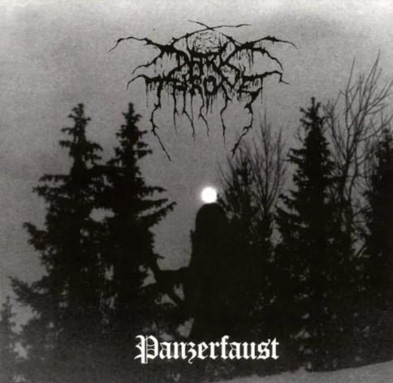
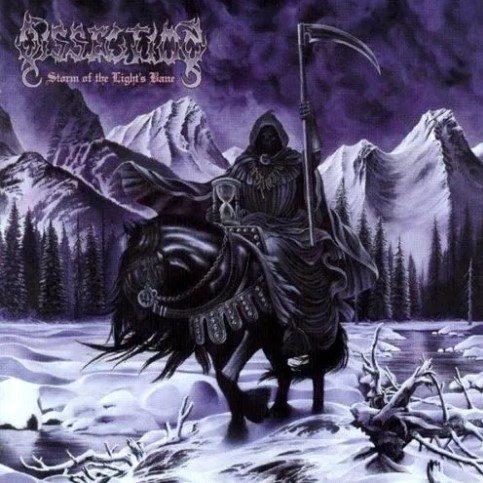

Contenido Visual
¡Aclaración!
Este segmento te invita a descubrir las portadas de algunos de los álbumes más
emblemáticos del black metal. En esta travesía artística, omitiremos las portadas polémicas, controversiales o grotescas
para concentrarnos en la majestuosidad y profundidad de la creatividad.
Aquí, no solo mostraré la estética visual, sino que también comentaré la información que cada álbum tiene para ofrecer.
"De Mysteriis Dom Sathanas"
Título: De Mysteriis Dom Sathanas
Banda: Mayhem
Año de lanzamiento: 1994
Género: Black Metal
Duración: 8 temas, 46:01
País de origen: Noruega
"De Mysteriis Dom Sathanas" es considerado un hito en la historia del black metal. Este álbum fue lanzado después de eventos trágicos que involucraron
a varios miembros de Mayhem. Su complejidad musical y lírica del álbum lo ha convertido en una influencia importante para muchas bandas de black metal.
Las letras de este álbum exploran diversos temas oscuros. Tengo que señalar que la banda Mayhem ha sido conocida por
mantener cierto misterio y ambigüedad en torno a sus letras, fomentando la interpretación personal por parte de los oyentes.
La portada de "De Mysteriis Dom Sathanas" es muy icónica como el álbum mismo. Presenta
un diseño sombrío y misterioso con una imagen distorsionada de una iglesia en ruinas. La portada refleja la atmósfera oscura.
"In the Nightside Eclipse"
Título: In the Nightside Eclipse
Banda: Emperor
Año de lanzamiento: 1994
Género: Black Metal
Duración: 9 temas, 49:24
País de origen: Noruega
"In the Nightside Eclipse" es el álbum debut de la banda noruega Emperor y es ampliamente considerado como uno de los álbumes más
influyentes en la historia del black metal. Lanzado en 1994, este trabajo ha dejado una marca indeleble en el género con su enfoque atmosférico y sinfónico.
La fusión de elementos sinfónicos, voces melódicas y ritmos rápidos en el álbum contribuyó a su singularidad y lo separó de otros lanzamientos contemporáneos.
Las letras del álbum exploran temas oscuros, místicos y filosóficos, complementando la música expansiva y atmosférica. "In the Nightside Eclipse" se mantiene como
un punto de referencia en el black metal, destacando la innovación y la profundidad lírica que la banda Emperor aportó al género.
La portada de este álbum presenta una obra de arte surrealista que captura la esencia cósmica y mística del álbum.
"At the Heart of Winter"
Título: At the Heart of Winter
Banda: Immortal
Año de lanzamiento: 1999
Género: Black Metal
Duración: 9 temas, 48:24
País de origen: Noruega
"At the Heart of Winter" es un álbum crucial en la discografía de Immortal. Lanzado en 1999, marcó un cambio en el
sonido de la banda hacia una dirección más melódica y épica sin perder la esencia del black metal. Este álbum es aclamado por su fusión de elementos atmosféricos y riffs poderosos.
Este álbum es notorio por introducir elementos más épicos y melódicos en el sonido de Immortal, lo que lo diferencia de sus trabajos anteriores.
Las letras de "At the Heart of Winter" exploran temas característicos del black metal, pero con un enfoque particular en la naturaleza invernal y la oscuridad. Mantienen
la esencia lírica del black metal al explorar temas oscuros y mitológicos.
El álbum es especialmente elogiada por su complejidad musical y lírica.
La portada de este álbum presenta una imagen impactante con la figura característica del Abbath Doom Occulta (frontman de Immortal)
en una postura icónica. El diseño refleja la temática invernal del álbum y transmite una sensación de poder y majestuosidad en medio de la fría oscuridad.
"Transilvanian Hunger"
Título: Transilvanian Hunger
Banda: Darkthrone
Año de lanzamiento: 1994
Género: Black Metal
Duración: 8 temas, 38:50
País de origen: Noruega
"Transilvanian Hunger" es un álbum icónico en la historia del black metal, representando la pureza y la crudeza del género. Lanzado en 1994, La producción cruda y primitiva de de este álbum
ha sido tanto elogiada como criticada, pero ha dejado una marca duradera en el sonido del black metal.
Las letras de "Transilvanian Hunger" reflejan la estética oscura y minimalista del álbum. Abordan temas típicos del black metal, como la oscuridad, la naturaleza y la introspección.
La lírica, aunque directa y simple, logra transmitir una sensación de desolación y desesperación que encaja perfectamente con la atmósfera cruda y primitiva de la música.
La portada de "Transilvanian Hunger" es conocida por su simplicidad y su impacto visual. Presenta el logo distintivo de Darkthrone en un fondo negro,
lo que refleja la estética minimalista del álbum. Esta imagen se ha convertido en un símbolo del black metal noruego y de la escena en general.
Aunque la producción ha sido objeto de debates, muchos fanáticos la consideran un componente esencial para la autenticidad y la integridad del álbum. "Transilvanian Hunger"
ha sido aclamado como un clásico del black metal y un álbum influyente que ha resistido la prueba del tiempo.
"A Blaze in the Northern Sky"
.jpg)
Título: A Blaze in the Northern Sky
Banda: Darkthrone
Año de lanzamiento: 1992
Género: Black Metal
Duración: 8 temas, 42:05
País de origen: Noruega
"A Blaze in the Northern Sky" es el segundo álbum de estudio de Darkthrone y marcó un cambio significativo en el sonido de la banda hacia un estilo más crudo y primitivo. Lanzado en 1992 tiene
producción cruda y la incluye de elementos punk ayudaron a definir la estética del black metal noruego. Es el primer álbum de Darkthrone en adoptar un enfoque más primitivo y raw,
abandonando el sonido más death metal de sus primeros trabajos.
Explora temas oscuros y apocalípticos, típicos del black metal. Abordan la mitología nórdica, la oscuridad y la desolación.
La lírica del álbum contribuye a la atmósfera cruda y primitiva, transmitiendo una sensación de rebelión y desafío.
La portada de "A Blaze in the Northern Sky" presenta una imagen siniestra de una figura encapuchada en un paisaje oscuro y helado.
La portada captura la atmósfera fría y desolada que define el sonido del álbum, y se ha convertido en un ícono dentro del black metal.
Este álbum es aclamado como un clásico del black metal y ha dejado una marca indeleble en la historia del género. Su influencia en el desarrollo del black metal y su estatus.
"The Tenth Sub Level of Suicide"
Título: The Tenth Sub Level of Suicide
Banda: Leviathan
Año de lanzamiento: 2004
Género: Black Metal
Duración: 10 temas, 70:59
País de origen: Estados Unidos
The Tenth Sub Level of Suicide" es el segundo álbum de Leviathan. anzado en 2003, el álbum es conocido por su enfoque experimental y desafiante del black metal.
La música de Leviathan es caótica, angustiante y llena de intensidad emocional.
Las letras exploran temas oscuros y personales, contribuyendo a la atmósfera intensa del álbum. Y su portada del álbum presenta una imagen oscura y
perturbadora que complementa la naturaleza abrasiva de la música.
La estética visual de Leviathan, tanto en las portadas como en otros elementos, es coherente con la naturaleza vanguardista del proyecto.
"The Tenth Sub Level of Suicide" ha sido elogiado por su originalidad y su enfoque poco convencional del black metal.
"Panzerfaust"
Título: Panzerfaust
Banda: Darkthrone
Año de lanzamiento: 1995
Género: Black Metal
Duración: 7 temas, 39:00
País de origen: Noruega
"Panzerfaust" es el quinto álbum de estudio de Darkthrone. Lanzado en 1995, este álbum sigue la línea del black metal crudo y primitivo
característico de la banda noruega. Se destaca por su enfoque minimalista.
Este álbum continuó la trayectoria de Darkthrone hacia un sonido más primitivo y menos producido. Las letras de "Panzerfaust" abordan temas típicos del black metal,
como la oscuridad, la guerra y la desolación. La lírica refleja la estética sombría y la atmósfera cruda que Darkthrone buscaba lograr en este álbum.
Su portada presenta una imagen evocadora y sencilla, siguiendo la estética minimalista que Darkthrone adoptó en varios de sus lanzamientos.
La imagen refleja la oscura atmósfera que impregna la música del álbum.
El álbum ha sido bien recibido en la escena del black metal y ha sido elogiado por su enfoque minimalista y su contribución a la evolución del sonido de Darkthrone.
"Storm of the Light's Bane"
Título: Storm of the Light's Bane
Banda: Dissection
Año de Lanzamiento: 1995
Género: Black Metal
Duración: 8 temas, 43:13
País de origen: Alemania
"Storm of the Light's Bane" es conocido por sus letras oscuras y atmosféricas, que reflejan el enfoque
lírico típico del black metal y el death metal melódico. Las letras exploran temas comunes en el black metal, como la oscuridad, la introspección,
la muerte y la filosofía.
La combinación de riffs melódicos, atmósfera oscura y letras introspectivas contribuyó a definir el sonido melódico característico del género.
Este álbum fue innovador en términos de estructuras musicales y enfoque lírico dentro del contexto del
black metal y del death metal melódico. La habilidad de Dissection para fusionar elementos melódicos con la ferocidad del black metal influyó en muchas bandas posteriores.
La portada presenta una escena oscura y atmosférica con una figura encapuchada en primer plano.
La figura sostiene una guadaña mientras está parada frente a una tormenta que se avecina. El diseño general de la portada refleja la naturaleza épica y oscura del álbum.
A lo largo de los años, el álbum ha ganado reconocimiento crítico y
es a menudo citado como uno de los mejores álbumes dentro del género. Su legado perdura como un hito importante en la evolución del black metal melódico.